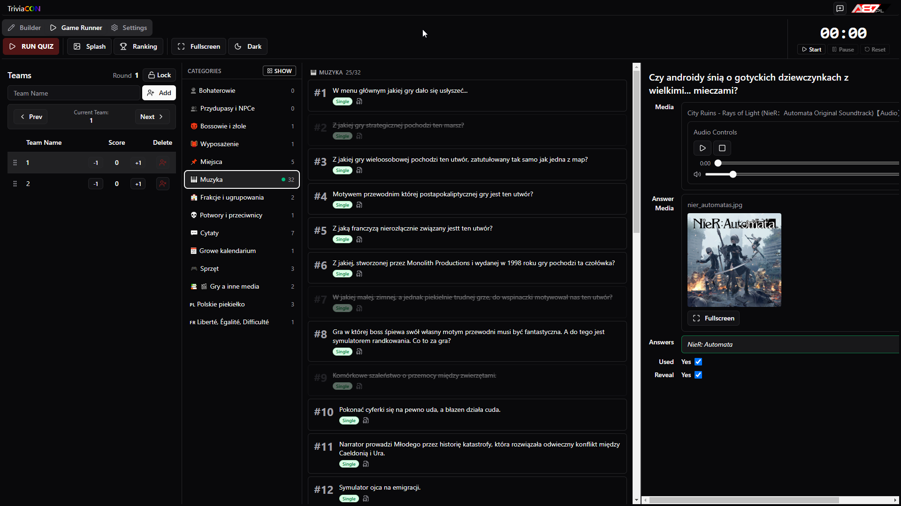

Two screens, one machine
The control panel stays on your laptop with answers, notes and scores. The game screen goes to the projector and shows only what you reveal — when you reveal it.
Triviacon turns one laptop into a two-screen trivia show: you drive from the control panel, the room watches the game screen on a projector or TV.


Built by a quiz host, playtested in real rooms with real projectors and bad WiFi.
The control panel stays on your laptop with answers, notes and scores. The game screen goes to the projector and shows only what you reveal — when you reveal it.
Single answer, multiple choice and list — with rich-text formatting.
Attach media to the question and a second slot revealed with the answer. Audio-only mode hides a video that would give it away.
Live scoring with half points, a staged podium reveal and tiebreakers that settle it fairly.
Per-question countdown, plus notes only you can see.
A .tcq bundles questions and media. Share it, back it up, open it anywhere. Crash-safe saving.
Ten built-in control-panel themes and a custom splash screen with artwork and music. Ships in English and Polish — and a new language is just one more locale file.
Pick a phase — jump between them freely during a live game.
Add categories, questions and media in the Builder — or open someone's .tcq.
Type in the teams and press Start when everyone's seated.
One click, then drag it to the projector or second display.
Reveal questions and answers, award points, and close with the podium.
“The car to a bicycle — but it never drives itself.”
No installer, no admin rights. Settings live next to the app, so it leaves nothing behind.
triviacon.exechmod +x the AppImageTriviacon.appOpen it in Triviacon and click through a full game — every media type the app supports, including audio-only video. AI-generated media, free to redistribute.
No. Teams answer on paper or out loud — the room just watches the game screen. You score by hand.
Never. Everything, media included, lives in the .tcq file on your machine.
Possibly — the builds aren't code-signed yet. On macOS, right-click the app and choose Open the first time.
Yes — a language is one JSON locale file. Contributions are welcome on GitHub.